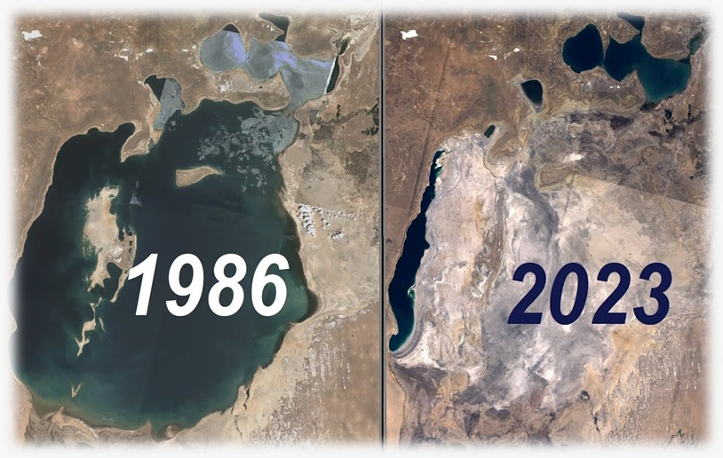
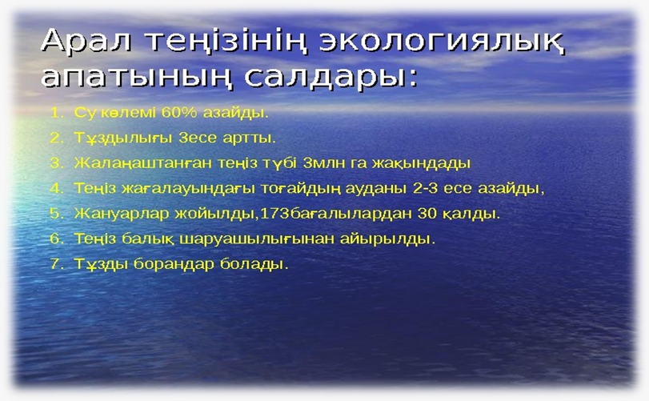
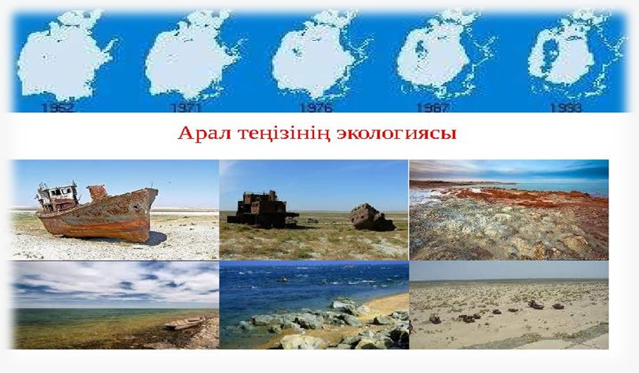
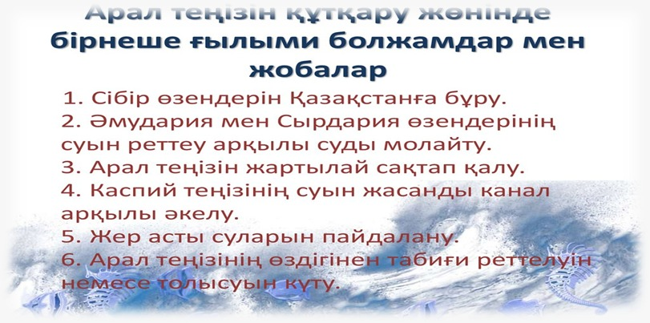
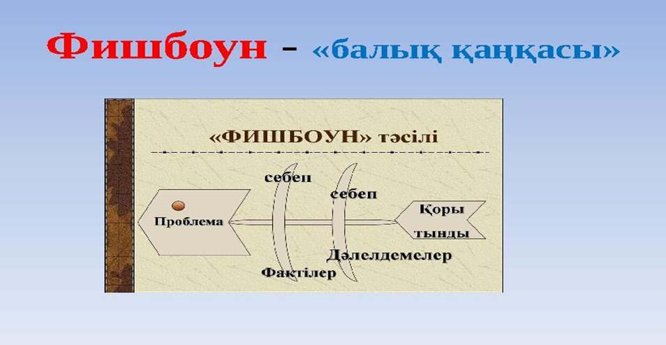

12-ТАПСЫРМА
Арал теңізінің экологиялық жағдайы және оның салдары
I. Теория
Мақсаты: Арал теңізінің экологиялық жағдайы мен оның адам өміріне тигізетін әсері туралы толық мәлімет беру. Арал теңізінің экологиялық дағдарысының себептері мен салдарын түсінуге көмектесу. Білім алушыларды экологиялық тұрғыдан жауапкершілікке тәрбиелеу және табиғатты қорғаудың маңыздылығын ұғындыру.
Міндеттері: Арал теңізінің экологиялық дағдарысының себептерін зерттеу (минералды ресурстарды пайдалану, суармалы жерлердің артық пайдаланылуы, өнеркәсіптік ластану және т.б.). Арал теңізінің қазіргі экологиялық жағдайын, оның өсімдік және жануарлар дүниесіне тигізетін әсерін талдау. Арал теңізінің экологиялық зардаптарын және оның аймақтағы халыққа келтірген әлеуметтік-экономикалық шығындарын түсіндіру. Арал теңізінің экологиясын қалпына келтіру үшін қандай шаралар қабылдануы керектігі туралы ұсыныстар жасау. Экологиялық сауаттылықты арттыру және экологиялық мәселелерге деген жауапкершілікті қалыптастыру.
Бағалау критерийлері: Арал теңізінің экологиялық дағдарысының себептері мен зардаптарын нақты әрі толық түсіндіреді. Экологиялық мәселелердің адамзат өміріне тигізетін әсерін дұрыс бағалайды. Тақырып бойынша қажетті ақпаратты жинақтап, кесте немесе диаграмма түрінде дұрыс талдайды. Экологиялық жағдайды сипаттайтын негізгі деректерді (қоршаған орта, флора мен фауна, әлеуметтік-экономикалық жағдай) дұрыс анықтайды.
Дәрістің қысқаша тезистері
Арал теңізінің экологиясы – бұл әлемдегі ең ірі экологиялық дағдарыстардың бірі. Арал теңізі, бұрын әлемдегі төртінші үлкен тұщы су айдыны болған, бүгінде бірнеше жылдар бойы адамдардың табиғатқа немқұрайлы қарауы мен табиғи ресурстарды пайдалану салдарынан қатты азайып, экологиялық апатқа ұшырады.

1-сурет: Арал теңізінің бұрынғы тарихи көрінісі
Арал теңізінің экологиялық дағдарысының себептері:
- Суармалы ауыл шаруашылығы: 1960 жылдары Орталық Азияда, әсіресе Өзбекстан мен Түрікменстанда мақта және күріш егістіктерін суаруға арналған су ресурстарының көп бөлігі Арал теңізіне құятын Әмудария мен Сырдария өзендерінен алынды. Нәтижесінде, Арал теңізіне құйылатын су мөлшері айтарлықтай азайды.
- Өнеркәсіптік ластану: Теңізді құрғату барысында химиялық тыңайтқыштар мен пестицидтер, сондай-ақ ауыл шаруашылығы қалдықтары теңізге түсіп, оның экологиясына үлкен зиян келтірді.
- Табиғи теңгерімнің бұзылуы: Теңіз деңгейінің төмендеуімен экосистемалардың бір бөлігі жойылып, балықтар мен басқа да су жануарларының өмір сүру ортасы ыдырады.

2-сурет: Құрғаған теңіз түбі және тұзды аймақтар
Экологиялық салдарлары:
- Теңіздің кішіреюі: Арал теңізі бастапқы көлемінің шамамен 70%-ын жоғалтты. Бұл оның экосистемасына, соның ішінде балық аулау өнеркәсібіне үлкен зиян келтірді.
- Ауаның ластануы: Теңіздің құрғаған түбінен көтерілуі нәтижесінде тұзды шаңдар ауаға тарайды. Бұл аймақтағы елдерде денсаулық проблемаларын тудырады.
- Биоәртүрліліктің жоғалуы: Арал теңізіндегі балық түрлерінің көпшілігі жойылып, жануарлар мен өсімдіктер әлемі дағдарысқа ұшырады.
- Климаттың өзгеруі: Теңіздің құрғауы аймақтың климатын өзгертіп, құрғақшылық пен жоғары температураларды арттырды.

3-сурет: Өзендер мен су ресурстарының азаюы
Шешімдер мен қалпына келтіру шаралары:
Суды үнемдеу технологияларын енгізу және халықаралық ұйымдардың көмегімен Арал теңізінің қалған бөлігін қалпына келтіру жобалары (мысалы, Кіші Аралдың су деңгейін көтеру үшін арнайы су қоймалары мен каналдар салу) іске асырылып жатыр.

4-сурет: Климат өзгерісі және жаһандық әсері
Бақылау сұрақтары:
- Арал теңізінің экологиялық дағдарысының басты себептері қандай?
- Арал теңізінің көлемінің азаюы қандай экологиялық және әлеуметтік салдарға әкелді?
- Арал теңізінің экосистемасына қандай зиян келтірді? Балықтар мен басқа да су жануарларының өмір сүру ортасы қандай өзгерістерге ұшырады?
- Арал теңізінің экологиялық дағдарысын тоқтату немесе жеңілдету үшін қандай шаралар қабылдануда?
- Теңіздің құрғауы аймақтың климатын қалай өзгертті, және бұл тұрғындардың өміріне қандай әсер етті?
Тапсырманы орындау бойынша нұсқаулық (орындау тәртібі):
- Мәтінді түсініп оқиды, түсінгенін айтады;
- Сұрақтарға жауап береді.
Тапсыру формасы: Ауызша түрде.
Модуль / пән бойынша ұсынылатын әдебиеттер тізіміне сілтемелер: Okulyk.kz - Қазақ тілі (10-сынып)
II. Практика (СӨЖ № 12.2)
1-тапсырма. Себептерді кесте түрінде жазу
Мәтін: Арал теңізінің экологиялық дағдарысы суармалы жерлерде судың артық пайдаланылуы, өнеркәсіптік ластану және табиғи теңгерімнің бұзылуының нәтижесінде орын алды. Су ресурстарының дұрыс пайдаланылмауы және экологиялық талаптардың ескерілмеуі теңіздің экологиялық жағдайын нашарлатты.
| Себептер | Түсініктеме |
|---|---|
| Суармалы жерлердегі артық су пайдалану | Әмудария мен Сырдария өзендерінен алынған су мөлшерінің көп болуы |
| Өнеркәсіптік ластану | Химиялық тыңайтқыштар мен пестицидтердің теңізге түсуі |
| Табиғи теңгерімнің бұзылуы | Теңіздің деңгейінің төмендеуі және экосистеманың жойылуы |
2-тапсырма. Әлеуметтік-экономикалық салдарды талдау
Сұрақтар:
- Арал теңізінің экологиялық дағдарысы аймақтағы тұрғындарға қандай әлеуметтік-экономикалық зиян келтірді?
- Халықтың денсаулығына қандай әсерлер байқалды?
- Экономикада қандай салалар зардап шекті?
Қосымша тапсырма: Өздері қалаған аймақтың экологиялық мәселелерін зерттеп, оны Арал теңізінің жағдайымен салыстыра отырып, салыстырмалы кесте құрыңыз.
1-сурет: Кіші Аралды сақтау және су деңгейін көтеру шаралары
3-тапсырма. Экологиялық жағдайды жақсарту жолдары
Тапсырма: Арал теңізінің экологиялық жағдайын жақсарту үшін қандай шаралар қабылдануы мүмкін екенін жазыңыз. Өз ұсыныстарыңызда нақты қадамдар мен шешімдерді енгізіңіз.
Сұрақтар:
- Қандай технологияларды қолдану арқылы су ресурстарын тиімді пайдалануға болады?
- Арал теңізін қалпына келтіруге көмектесетін халықаралық жобаларға қандай үлес қосуға болады?
- Арал аймағының экологиялық жағдайын жақсарту үшін қандай ағартушылық шаралар қажет?
4-тапсырма. Эссе немесе баяндама жазу
Тақырыптар:
- Арал теңізінің құрғауы мен климаттық өзгерістер арасындағы байланыс.
- Арал теңізінің экологиясының адам денсаулығына әсері.
- Теңіздің экосистемасындағы биологиялық түрлердің жоғалуы: әсерлері мен себептері.
5-тапсырма. Экологиялық білім беру және ағартушылық
Тапсырма: Студенттерге экологиялық білім берудің тиімділігін талқылап, ұсыныс жасаңыз. Арал аймағында экологиялық дағдарысқа қарсы қандай шаралар ұйымдастыруға болады?
Сұрақтар:
- Экологиялық мәселелерді шешу үшін адамдар арасында білім мен ақпарат тарату қаншалықты маңызды?
- Оқушылар мен жастар арасында экологиялық сауаттылықты арттыру үшін қандай әдістерді қолдануға болады?
- Арал теңізі аймағындағы экологиялық білім беру іс-шараларының тиімді болуы үшін қандай шаралар қабылдануы керек?

2-сурет: Жастар арасында экологиялық сауаттылықты арттыру
Тапсыру формасы: Жазбаша түрде.
Модуль / пән бойынша ұсынылатын әдебиеттер тізіміне сілтемелер: Okulyk.kz - Қазақ тілі (10-сынып)
III. Бағалау парағы
| № | Тапсырма | Дескрипторлар | Ұпай саны | Студенттің ұпай саны |
|---|---|---|---|---|
| 1 | Арал теңізінің экологиялық дағдарысына әкелген негізгі себептерді анықтап, кесте түрінде жазу. |
• Мәтінді оқиды; • Себептерді анықтайды; • Кесте түрінде жазады |
5 балл 10 балл 10 балл |
|
| 2 | Сұрақтарға жауап беру және салыстырмалы кесте құру. |
• Сұрақтарға жауап береді; • Салыстырмалы кесте құрайды |
5 балл 10 балл |
|
| 3 | Арал теңізінің экологиялық жағдайын жақсартудың жолдарын ұсыну. |
• Жағдайды жақсарту жолдарын ұсынады; • Ұсыныстарды сұрақтар арқылы нақты жазады |
10 балл 10 балл |
|
| 4 | Берілген тақырыптар бойынша қысқаша эссе немесе баяндама жазу. | • Таңдалған тақырып бойынша эссе немесе баяндама жазады | 20 балл | |
| 5 | Экологиялық білім берудің тиімділігін талқылап, ұсыныс жасау. |
• Экологиялық білім берудің тиімділігін талқылап, ұсыныс жасайды; • Өз ойларын еркін, нақты жеткізе алады |
10 балл 10 балл |
|
| Барлығы: | 100 балл | / 100 | ||